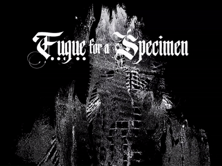
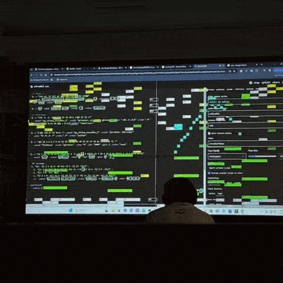
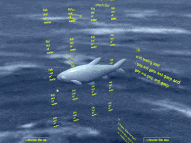
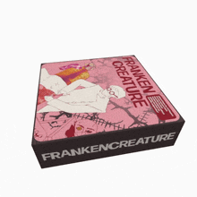

TouchDesigner Projects

Fugue for a Specimen

Strudel Projects

p5.js Projects

USC Springfest Visuals
Frankencreature

USC MA+P Social Media
 FINAL.png)
ZAP Graphics

I am Emi Savage. I am a media artist and undergrad student based in Los Angeles, CA.
I make work that draws you into the body, the web, and the things in your backyard.
My main disciplines are creative code and graphic + motion design, complemented with 3D modeling, fabrication, game design, and immersive design.
I am currently earning my Bachelor's Degree in Media Arts + Practice at the University of Southern California.
In my free time, I like to collect CDs and feel the sun on my back.
This portfolio site is open source and coded by hand with p5.js.